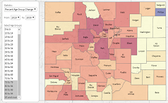
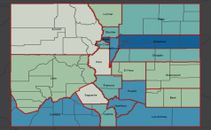

!-- FONT AWESOME CSS Source for buttons the list of icons is here: https://fontawesome.com/icons?d=gallery&p=2 -->
<
Sample Population Page:
Data Download Applications
Population Change By Age:
1990-2050
 Population Change:
Population Change:
Births, Deaths, and Migration
 Age Animation
Age Animation
 Population and Housing Density 2010
Population and Housing Density 2010
 Historical Birthplace of Colorado Residents
Historical Birthplace of Colorado Residents
 Historical Residence of Colorado Born
Historical Residence of Colorado Born
Historical County Populations
 Colorado County Population
Colorado County Population